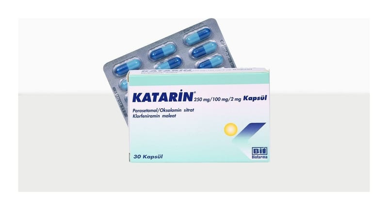

Katarin 250 mg/100 mg/2 mg Kapsül, 30 Adet

Ne için kullanılır
KT · Bölüm 1KATARİN®Kapsül, başı koyu mavi, gövdesi açık mavi kapsül olup beyaz toz içermektedir. KATARİN®30 kapsüllük ambalajlarda piyasaya sunulmaktadır. Tablet içeriğinde sığır kaynaklı jelatin bulunmaktadır.
Bu ilacı kullanmaya başlamadan önce bu KULLANMA TALİMATINI dikkatlice okuyunuz, çünkü sizin için önemli bilgiler içermektedir.
Bu kullanma talimatını saklayınız. Daha sonra tekrar okumaya ihtiyaç duyabilirsiniz. Eğer ilave sorularınız olursa, lütfen doktorunuza veya eczacınıza danışınız. Bu ilaç kişisel olarak sizin için reçete edilmiştir, başkalarına vermeyiniz. Bu ilacın kullanımı sırasında, doktora veya hastaneye gittiğinizde doktorunuza bu ilacı kullandığınızı söyleyiniz. Bu talimatta yazılanlara aynen uyunuz. İlaç hakkında size önerilen dozun dışında yüksek veya düşük doz kullanmayınız.
KATARİN®, bir ağrı kesici ve ateş düşürücü (parasetamol), bir antihistaminik (klorfeniramin maleat) ve balgamı eritici etkisi ile salgıları sulandıran ve böylece öksürüğü tedavi eden bir antitüssif (oksolamin sitrat) olmak üzere üç etkin madde içeren kombine bir ilaçtır. KATARİN®grip, nezle ve soğuk algınlığı gibi üst solunum yolları akut enfeksiyonlarında ve alerjik hastalıklarında görülen ağrı, ateş, hapşırma, öksürük, burun akıntısı, burun tıkanıklığı gibi şikayetlerin giderilmesinde kullanılır.